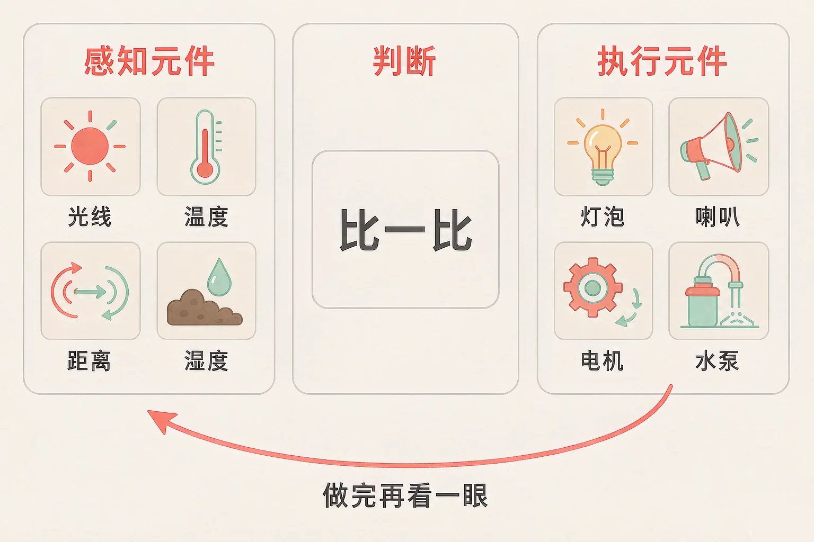
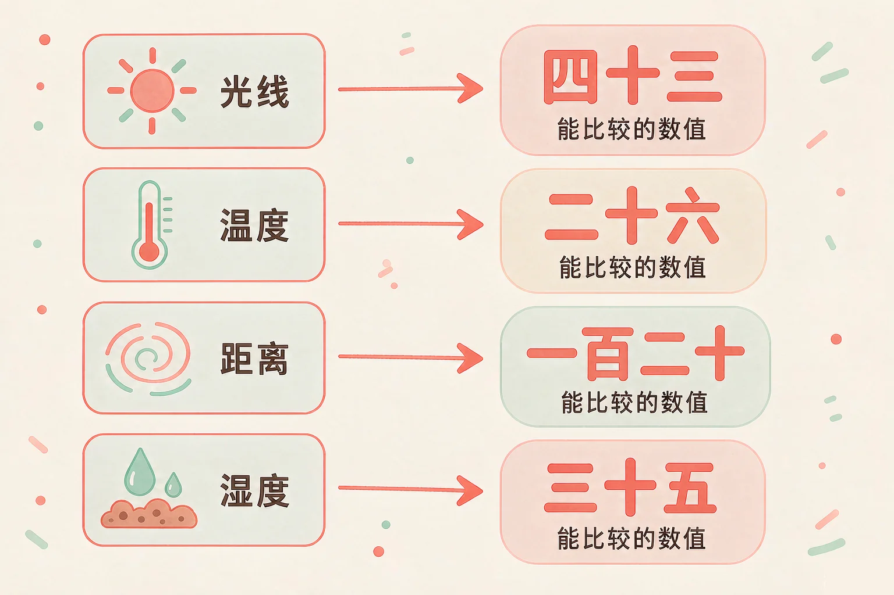
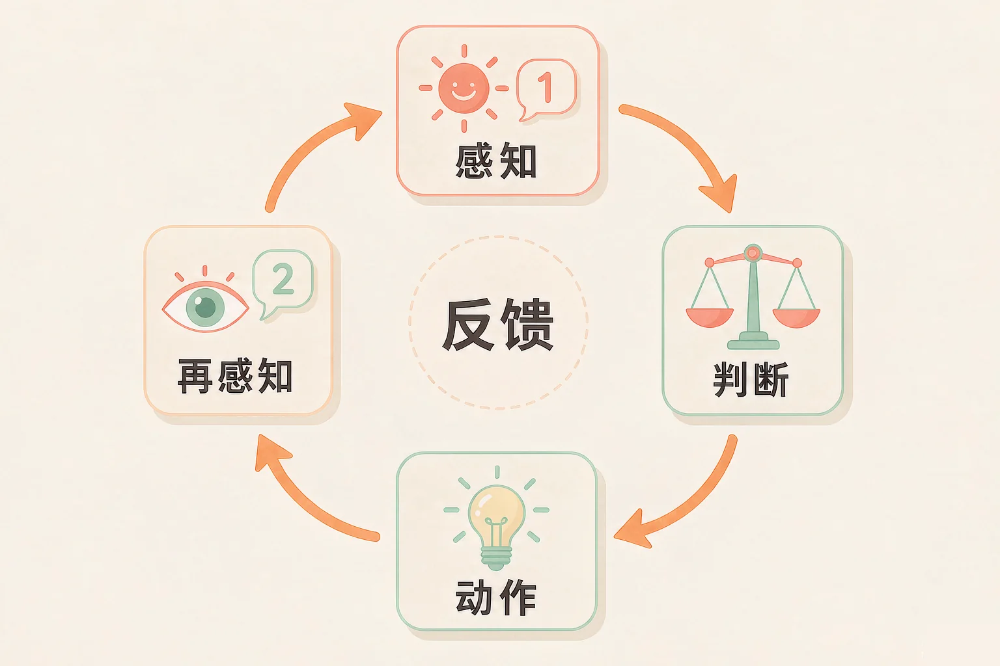

Gallery
v1.0.0 · skill v7.22.0
小学六年级 · 过程与控制
天黑了灯自己亮，土干了水自己浇——机器凭什么知道该动手了？

选一个你真正好奇的问题，后面的动手活动都会围着它转。
选择或输入后，这节课会围绕你的问题展开。
先凭直觉选一个，选完立刻看到解释——错了也没关系，正好知道要重点听哪里。
1. 教室里没有人，天黑了灯却自己亮起来。它靠什么知道天黑了？
灯不会看，也不会猜。它靠的是一根光线传感器，把「有多亮」变成一个能比较的数值。错因提醒：常见错误是把传感器当成「眼睛」。它更像一只手，把变化变成数字，真正做决定的是后面的判断。
2. 下面哪一样，是把电变成动作的执行元件？
执行元件负责动手：小水泵能把水抽上来，这是看得见、听得见的动作。错因提醒：最容易搞混的就是传感器和执行器——问一句就行：它是把变化读成数据，还是把电变成动作？
3. 一台自动装置只装了传感器，没有装执行元件。它会怎么样？
传感器只会感觉，动手必须靠执行元件。少了它，装置就只能看不能动。错因提醒：不少同学误认为「装得越高级越好」，其实一台装置最少要有两样：一个负责感觉，一个负责动手。
为什么要学这一课？
我们做事凭感觉和想法就够了（And）；可机器没有眼睛耳朵，对世界一无所知，你不告诉它外面发生了什么，它就什么也做不了（But）；所以要给它装上两种元件：一种负责感觉，一种负责动手——先认清这两种元件，后面才谈得上让它自己干活（Therefore）。
机器要自己干活，第一步是能感觉到外面的变化。这类元件本事只有一件：把看不见的变化，变成能比较的数据。
光线传感器
把「有多亮」变成数值，比如 30 勒克斯。
温度传感器
把「有多热」变成数值，比如 26 摄氏度。
距离传感器
把「有没有东西靠近」变成数值，比如 12 厘米。
湿度传感器
把「土里有多湿」变成数值，比如 35%。
这一大类元件，我们统称为传感器，也叫感知元件。它们只管把变化读成数据，不管该不该动手——那是后面的判断和动作要做的事。

🔍 深层理解 换个角度再看一遍这件事，看看能不能说出背后的原理。
看见它：身边的自动装置都能拆出「感觉」这一头：声控灯在听、扫地机在碰、自动门在看，它们都在把变化变成数据。
解释它：为什么非要把变化变成数字？因为机器只会比大小。说「有点暗」它比不了，说「30 比 50 小」它一下就能判断。
迁移它：你自己做事也是这四步：先看情况（感知），再想一想（判断），然后动手（动作），做完还要回头看看效果（再感知）。机器只是把它拆得更清楚。
今天的任务是这一个：天黑的时候，教室的灯自己亮起来。左边挑一个感知元件，右边挑一个执行元件，都装好以后点「通电测试」。
感知口
空着
判断
照规则比一比
动作口
空着
先各挑一个元件，再看这盏灯能不能自己亮起来。
光能感觉还不够。传感器只是把外面的事变成了数据，它自己不会动，也不会响。真正让事情发生的，是另一类元件。
灯
通电就发光——把电变成看得见的光。
小喇叭
通电就发声——把电变成听得见的声音。
小电机
通电就转起来——把电变成转动的力。
小水泵
通电就抽水——把电变成看得见的动作。
这一大类元件统称为执行器，也叫执行元件。它的本事也只有一件：把电变成动作。

以为只要装上传感器，装置就会自己干活。只有传感器没有执行器，它就只能看不能动——数据读出来了，却没有人能把它变成动作。反过来，只有执行器没有传感器，它就只能动，却不知道该什么时候动，只能等人来按开关。
先选一个任务，再从元件库里挑两张卡片：先点的那张放进感知口，后点的那张放进动作口。元件库里没写谁是谁，得靠你自己判断。
感知口
空着
动作口
空着
先选一个任务，再挑两张卡片。
已完成任务：0 / 3
题目：教室里的灯，天一黑就自己亮，天亮以后自己熄。请把它拆成四步，并说出每一步用到了什么元件。
漏掉第四步「再感知」，把它当成多余的动作。少了它，灯只能傻乎乎地一直亮着，或者一闪一闪停不下来。第四步是整个装置自己检查有没有把事办好的那一步。
先凭直觉选一个，选完立刻看到解释——错了也没关系，正好知道要重点听哪里。
1. 「只要装上一个传感器，装置就会自己干活了。」这句话对吗？
传感器把变化读成数据，可是它不会动。少了执行元件，装置就只能看不能动。错因提醒：常见错误是把「会感觉」当成了「会干活」——感觉和动手是两件不同的元件干的事。
2. 一台装置装了执行元件，却没有传感器。它最可能的表现是？
没有传感器就没有数据，判断这一格什么也拿不到。执行元件只能等人下命令。错因提醒：容易误认为「力气大就够了」——感觉这一头空着，再大的力气也使不到点上。
3. 为什么说完整的装置是一个「闭环」？
感知、判断、动作，再加上做完之后的再感知，走完一整圈才是闭环——装置能自己检查效果。错因提醒：容易把「再感知」当成重复劳动，其实第一次读数据是为了决定该不该动手，第二次读是为了确认结果。
先点一张卡片，再点你认为对的那个格子。每放一次都会立刻告诉你理由。
点一张卡片开始归位。
已归位：0 / 8
放完以后想一想，说给同桌听：
这间智能花房要用电来抽水、点亮补光灯。如果它的感知元件被挡住了，或者判断标准写错了，会发生什么？你会怎样让它更安全、更省电？
先凭直觉选一个，选完立刻看到解释——错了也没关系，正好知道要重点听哪里。
1. 自动门「有人靠近就打开，人走开就关上」。这里的感知元件和执行元件分别是？
距离传感器负责感觉「有没有人靠近」，电机负责把门推开——一个感觉，一个动手。错因提醒：常见错误是把两者搞反。判断办法：读数据的那一头是感知，出力动手的那一头是执行。
2. 一个装置只会响，却根本不知道外面发生了什么。它最可能缺了什么？
它已经能动手了，缺的是感觉这一头。没有数据，判断这一格就是空的。错因提醒：容易误认为「换更好的执行元件就能变聪明」——聪明来自能拿到数据、能做出判断。
3. 小组给花房做了自动浇花装置，还想让它更稳妥。下面哪种做法最合适？
在闭环里补上「再感知」，装置就能自己检查效果，该停的时候停下；一直开着既浪费水又会淹坏花，蒙住传感器等于把眼睛遮上。错因提醒：常见的错误想法是「只要动起来就行」——动手之后不看结果，正是最容易出问题的地方。
还有一条不该忘的提醒：给装置接电线、装水泵的时候，一定要在老师的指导下动手，不在潮湿的地方碰电源。机器能替我们干很多活，但安全这一步，永远得由人把关。
给别人讲一遍：请用「感知、判断、动作、再感知」这四个词，说清楚一盏路灯是怎样自己亮起来、又自己熄掉的。
再动一动手：用四张纸片写上四个词，摆成一个圈，指着讲给同桌听。
三层练习，做完第一、二层就算通关；第三层留给愿意继续探索的同学。
⭐ 基础巩固（必做）
⭐⭐ 能力应用（必做）
⭐⭐⭐ 迁移挑战（选做）
左边是学它之前要先会的，右边是学会之后可以继续探索的，下面是同一领域的伙伴知识。
图谱正在加载：首次进入需下载知识索引（约 1–3 秒），加载完成后本行会自动消失。